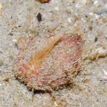
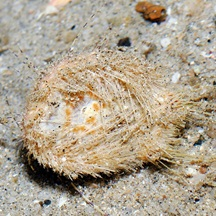
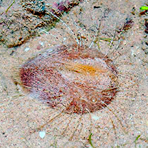
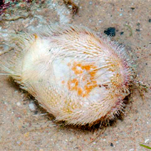
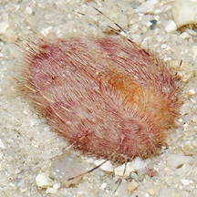

|
|
| echinoids text index | photo index |
| Phylum Echinodermata > Class Echinodea > heart urchins |
| Lovenia
heart urchin Lovenia elongata* Family Loveniidae updated Apr 2020 Where seen? These long-spined heart urchins with a deep groove in the front is sometimes seen on our Southern shores. Features: 6-8cm long. Body teardrop-shaped, with a deep groove in the front and tapered at the back end. Petaloid not obvious in living specimens. Sparse long spines which are banded, with many shorter spines covering the body. It can use these spines to burrow and to move around quite rapidly, as Mei Lin's video clip (below) shows. Overall colour dark rose pink. |
 Upperside Kusu Island, Jul 04 |
 Side view |
 Underside |

*ID needs confirmation.
| Lovenia heart urchins on Singapore shores |
On wildsingapore
flickr
|
| Other sightings on Singapore shores |
 Changi East, Oct 11 |
 Changi East, Oct 11 |
 Sentosa, Jul 12 |
 Sentosa, Jul 12 |
 Cyrene Reef, May 11 |
| shared by Neo Mei Lin on her blog |
Links
|